id="js_content" style="">
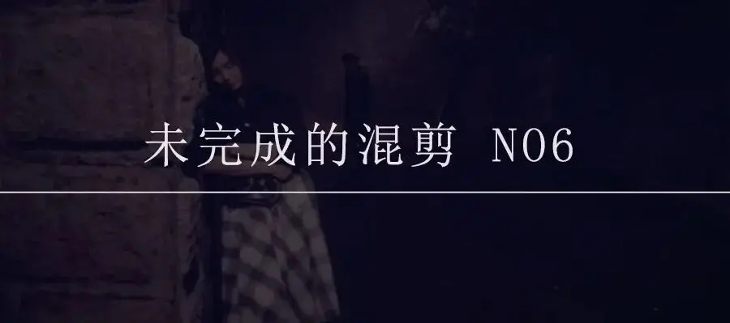
每个人都在追逐爱和希望。
可事实上，孤独才是常态。
被拒绝、被误解、被忽视，甚至一个生命的逝去在这个冷漠的社会激不起一丝涟漪。
再无人愿意驻足去聆听另一个人的故事。
人与人之间的隔阂犹如铜墙铁壁，一个人的声音再响再亮，再哀怨动听，可在另一个人的耳中永远是噪音。
这期未完成的混剪，我将带大家盘点那些难以逃脱的孤独。
虽无用，但求共鸣。
-01- 自我放逐
当一个人被拒绝或被误解时。
他能做的便是从当前所处的环境或者群体中自我放逐。
将自己置身一片荒漠中。
这是一种近乎天然的自我保护，可以将伤害自己的人挡在外面，同时也可以自我疗伤。
可，一旦走入这片沙漠，要走出去便没有那么容易。
王家卫《东邪西毒》里欧阳锋遭遇的就是这种痛楚。

他喜欢一个女孩，可却害怕被拒绝。
所以，他对女孩的爱从未说出口，直到那个女孩有一天嫁给了自己的大哥。
为此，他远走他乡，将自己置身沙漠。

沙漠虽然很热，可锥心的孤独犹如冰川，将他置身在巨大的冷意之下。
思念和怨恨裹挟在他对自己前途的抉择中。
那女孩也是一样，她性子强烈，一直等着从欧阳锋的口中听到一个爱字。
迟迟等不到，便将自己嫁给欧阳锋的大哥，以报复那个不“在乎”自己的欧阳锋。
这种伤人伤己的方式，便是女孩自我放逐的沙漠。

可岁月无情，在这场爱情的放逐中，女孩思念成疾。

当她看着镜中花容失色、面容憔悴的自己，“她才知道她输了，在她最好的时候，她爱的人不在自己身边。”
而性情孤僻、封闭的欧阳锋，直到彻底失去毕生至爱时，他才离开那片大漠。
面对遗憾，欧阳锋告诉自己，“当你不能够再拥有的时候，唯一可以做的就是令自己不要忘记”。
这是多么独孤而又无奈的一句话！

-02-形同陌路
张爱玲有一句让我感慨万千，“最遥远的距离不是爱也不是恨，而是熟悉的人渐渐变得陌生”。
《太极张三丰》中，天宝和君宝自小在少林寺长大。
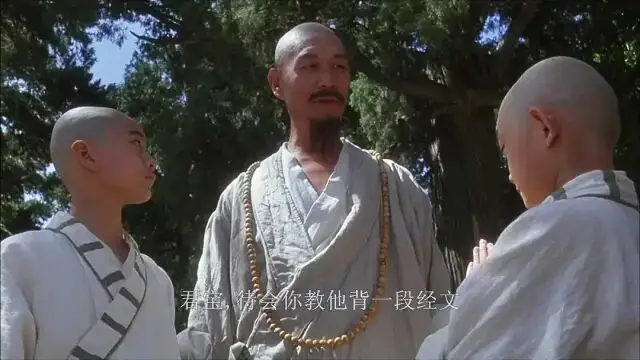
长大后，天宝野心勃勃，爱财爱权，并可以毫无底线去获取。
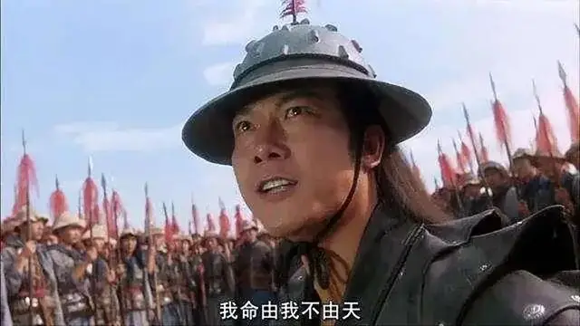
君宝则重情重义，坚守正义和真相。
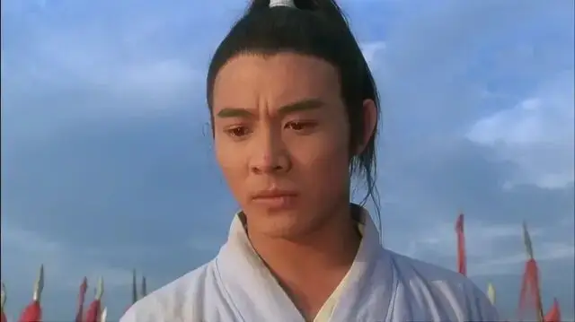
于是，两人形同陌路，并最终成为死对头。
现实中，虽不会像电影中那样戏剧化，可这种朋友之间形同陌路的经历是非常普遍的。
过去，朋友之间聊的电影、游戏和辣条，关注的是你是否开心。
可现在，大家在一起谈的永远是车子、房子和工作。
当社交变得只有目的和功利，人越多我们会越孤独。
三观不合，朋友之间再难走入彼此的心底。
于是，形同陌路便是不可避免的结局。
过去历历在目，可走在路上的往往只有你一人。
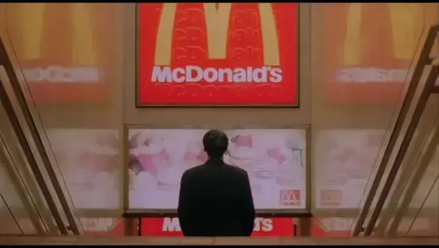
-03- 渺小的无助
有一部电影，只要提到他的名字，大家就能感觉到一种悲伤。
这部作品便是《海上钢琴师》。
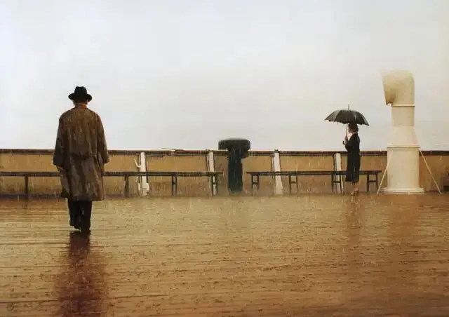
被遗弃的孩子、蔚蓝的大海、感伤的音乐....
电影中的主人公出生在船上，一生未离开过那只船，甚至最后和船一起死亡。
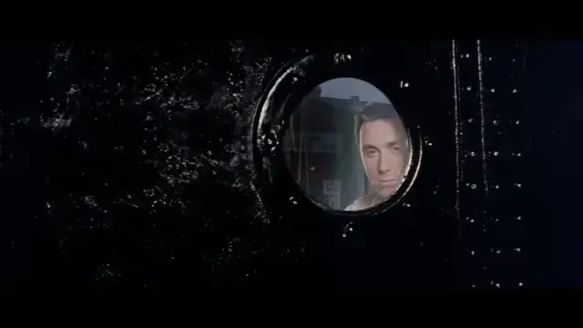
这种对待世界的态度击中了我们内心最敏感柔软的地方。
我们出生的这个世界，是一个极其复杂、充满诱惑和危险的世界。
会有太多选择要我们去做，有太多东西要我们去看。
这个世界就像是一个没有尽头的路，会让我们不断经历幻灭，却又看不到终点。
这是一种未知的恐惧，是一个看不到明天和希望的旅程。
而这正是我们每一个人正在走的路。
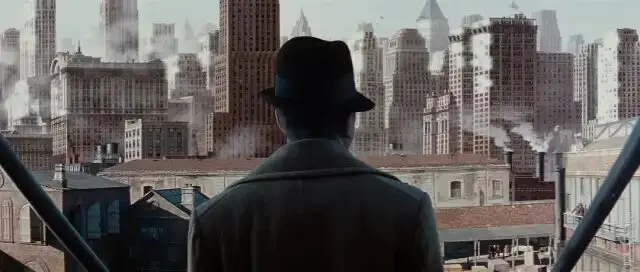
我们投身在996中忙的不亦乐乎，在柴米油盐中精打细算，可一觉醒来，会经常觉得这个世界很不真切，这样的生活什么时候才是个尽头。
电影中的主人公便深刻地洞察了人类的这一悲剧。
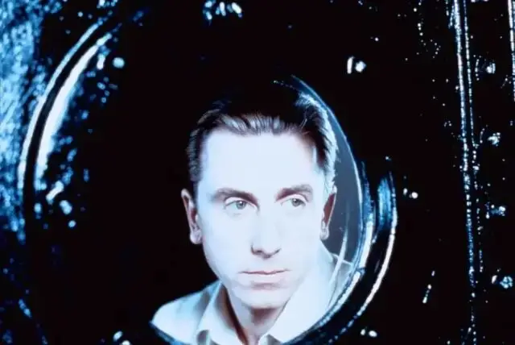
他虽然未曾去过陆地，但看着船上来来往往的路人，看着那些兴奋又绝望、开心又落寞、看似充满信心而又迷茫的面孔，他害怕了。
他蜷缩在船上的一角，选择了孤独，并最终习惯了孤独。
始终忘不了主人公的那段话：
“你能在键盘上表现的音乐是无限的，我喜欢这样，我能轻松应对，而你现在让我走过跳板，走到城市里，等着我的是一个没有尽头的键盘，我又怎能在这样的键盘上弹奏呢？那是上帝的键盘啊！
城市那么大，看不到尽头。在哪里？我能看到吗？就连街道都已经数不清了，找一个女人，盖一间房子，买一块地，开辟一道风景，然后一起走向死路。
太多的选择，太复杂的判断了，难道你不怕精神崩溃吗？陆地，太大了，他像一艘大船，一个女人，一条长长的航线，我宁可舍弃自己的生命，也不愿意在一个找不到尽头的世界生活，反正，这个世界现在也没有人知道我。
我停下来不是因为所见是因为所不见，是因为看不见的东西。连绵不绝的城市什么都有，就是没有尽头，我需要看见世界的尽头。上了岸，何去何从？”
如果前路没有希望，活着便是一种诅咒，而死亡某种程度上是一种祝福。
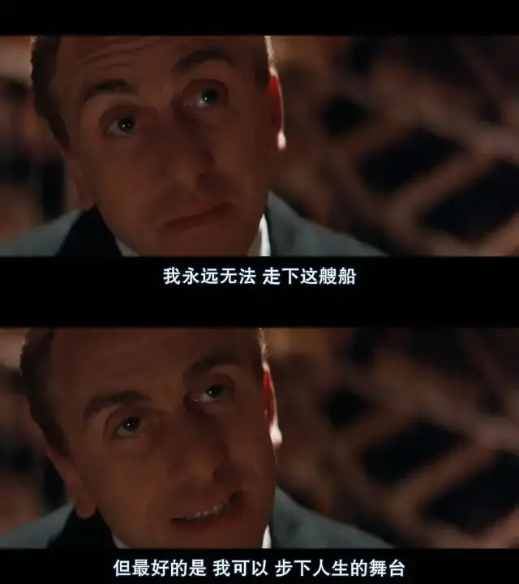
-04- 踽踽前行
我觉得有一种幼稚。
就是千方百计想要让别人理解你。
甚至还想要去改变身边人的想法。
可时间总会给你一个冰冷的答案，这些几乎是一种奢望。
就算另一个人会一时为你而改变，但总有天他会故态复萌、回归自我。
所以，踽踽前行是我们必须要习惯的常态，即使有了朋友，有了婚姻，独行依旧是常态。
《婚姻故事》里，男女主人公在热恋时彼此牺牲和成就，可谁都不会想到，这些牺牲有一天会成为另一伴所控诉和厌倦的点。
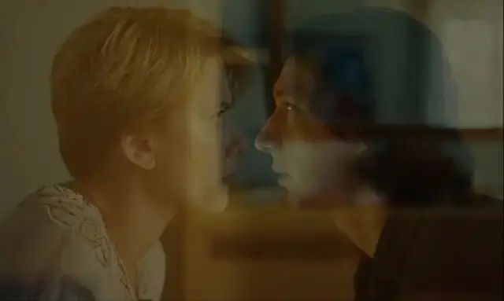
《危楼愚夫》中的管道工坚持真相，不仅被权势扇了耳光，还被叫不醒的愚民踩在地下。
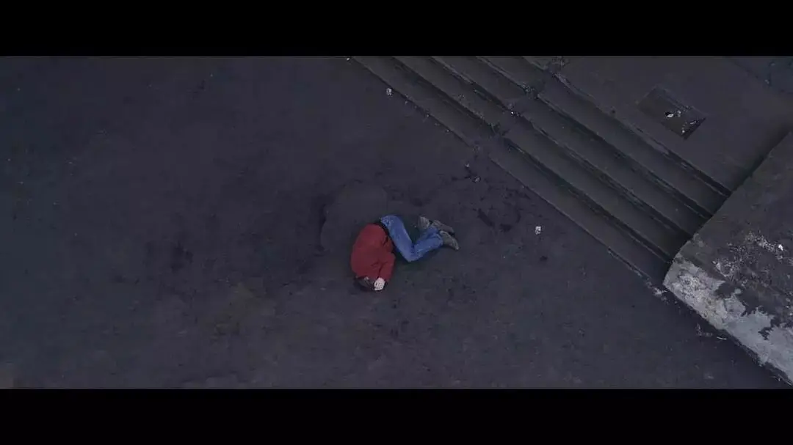
《潜行者》中的主人公如布道者一般，倾尽所有心力帮助别人找到给人希望的“区”，但在别人眼里潜行者却是一个骗子和小丑。
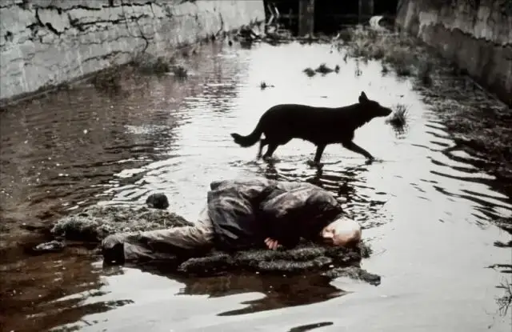
《肖申克的救赎》中，当所有人向高墙认命的时候，主人公却孤独地用小锤子为自己策划了19年的私奔......
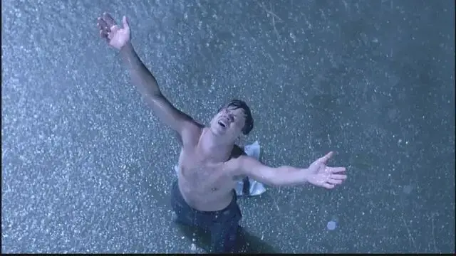
-05- 难以拥有
关于刻画都市人的孤独，王家卫绝对是顶级大师。
繁忙的工作、每天擦肩而过的人流、纸醉金迷的诱惑、独立自我的价值追求，这些都让都市人难以表达爱和持守一份爱。
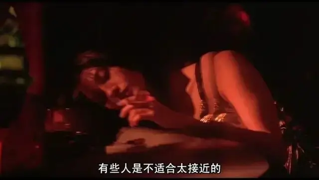
而遭遇背叛、分手以及没有回应的残忍，都是都市人不断面对的苦楚。
所以，光鲜亮丽的外表背后，是平静的绝望、不动声色的感情、自我矛盾和纠结以及难以逃避的孤独。
而拥抱当下是都市人仅存的幸福时刻，这种幸福短暂、易逝且脆弱，却成为了都市人唯一能感受到活着的“神圣”时间。
《花样年华》刻画了中年人的婚姻危机以及含蓄隐忍的爱。
两人想要爱却不敢拥抱。
明明想在一起，却只买了一张船票。
于是，那轻轻的依靠以及漫步在路上的倩影便成为了他们的花样年华。
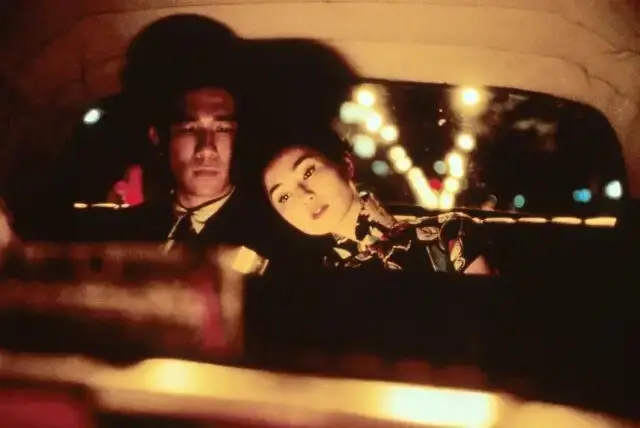
《阿飞正传》中，“1960年4月16号下午三点之前一分钟，你和我在一起。”
一分钟的幸福是一生的快乐。
而一生的遗憾是那一分钟的孤独。
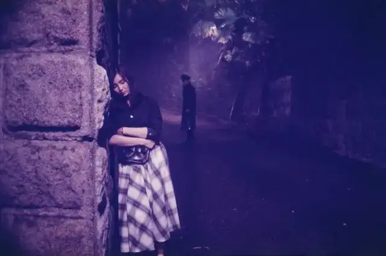
《堕落天使》中也是一样，只有一分钟的拥抱，成为了全片最大的幸福和高潮。
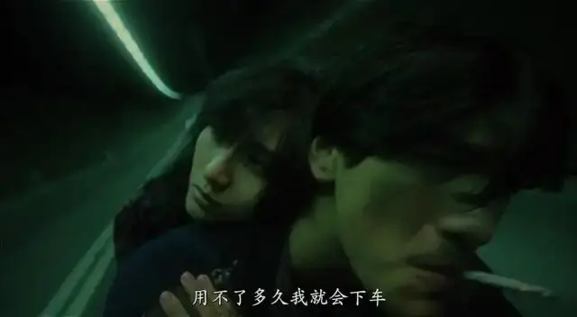
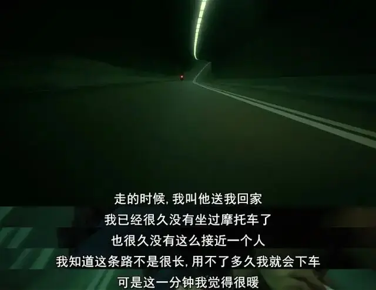
《重庆森林》里的爱情竟然也有保鲜期，一旦过期就会变质。
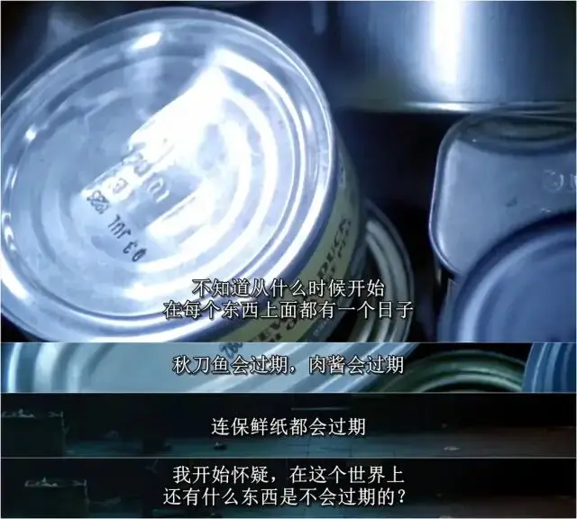
时间既是爱情的杀手，又是爱情的见证者。
当我们无法拥有爱的时候，拥抱的那一刻，遭遇背叛的那一刻，爱情过期的那一刻，都是刻骨铭心的孤独时刻。
关于时间和孤独，《大话西游》也深刻地呈现了这种悲剧。
至尊宝在错误的时间遇到了正确的人，那个时候他未能珍惜紫霞。
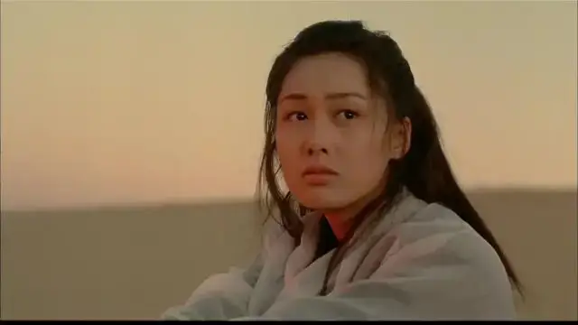
可当至尊宝明白一生所爱是紫霞的时候，也正是他化身孙悟空的时候，而此时的孙悟空却再也无法拥抱紫霞。
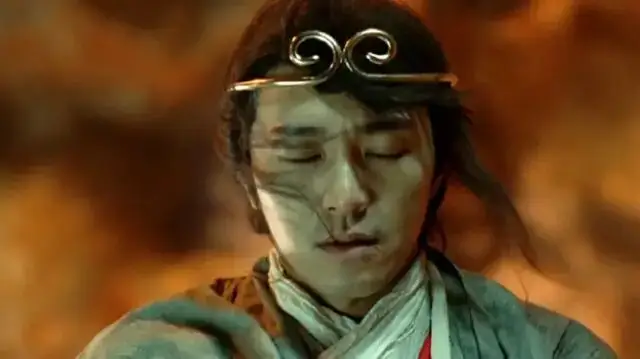
最后，当孙悟空在撕心裂肺中拥抱紫霞的时候，也是他和一生所爱彻底分别的时候。
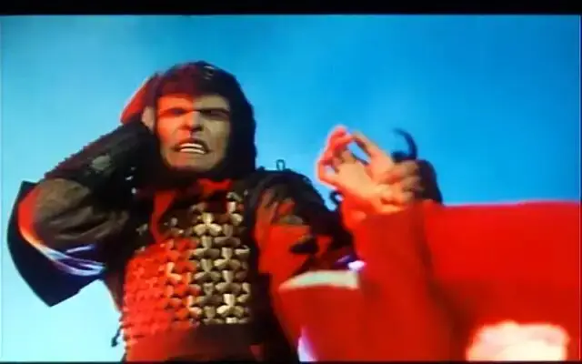
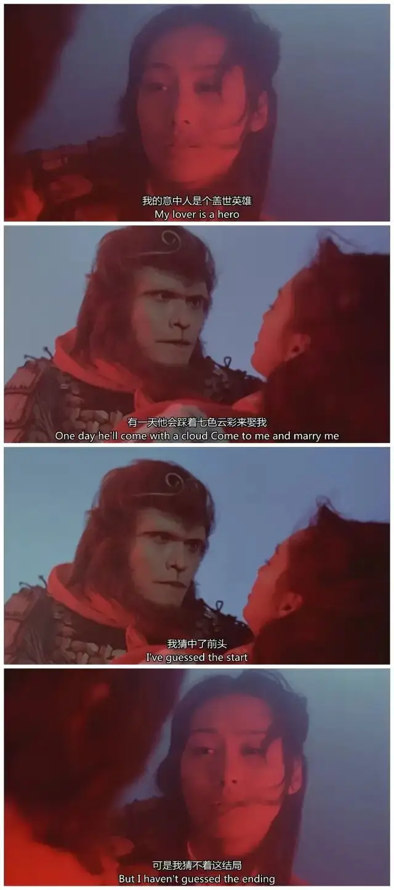
“从前现在过去了再不来，红红落叶长埋尘土内........”
-06- 永恒的孤独
当一个人拥有爱情、财富和权力的时候，他就不会孤独么？
我想，每个人都知道这个问题的答案，我们一样会孤独，一样会空虚、寂寞、冷。
甚至，有时候欲望得到的满足越大，我们会经历更大的空虚和孤独。
《羞耻》中，男主沉浸在自慰不能自拔，刹那的激情，急速到达的快感，随之而来的便是坠入深渊的幻灭。
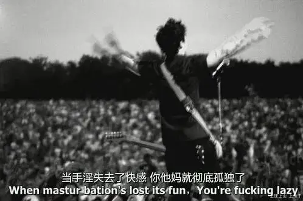
《教父》中，两代教父都是黑手党的枭雄，一生躁动在争权夺利中，可不论是朝气蓬勃还是盛极而衰，他们最后面对的都是殊途同归的孤独。
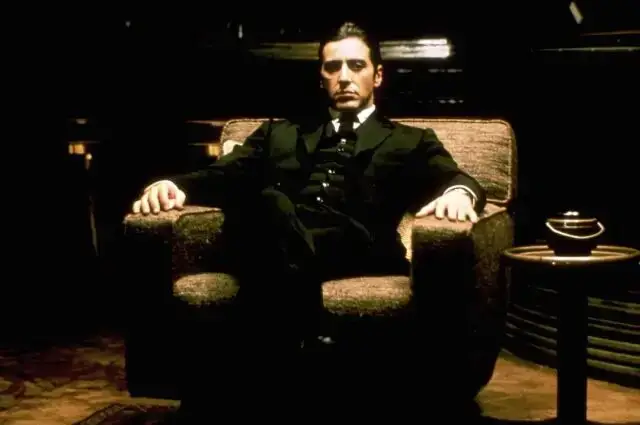
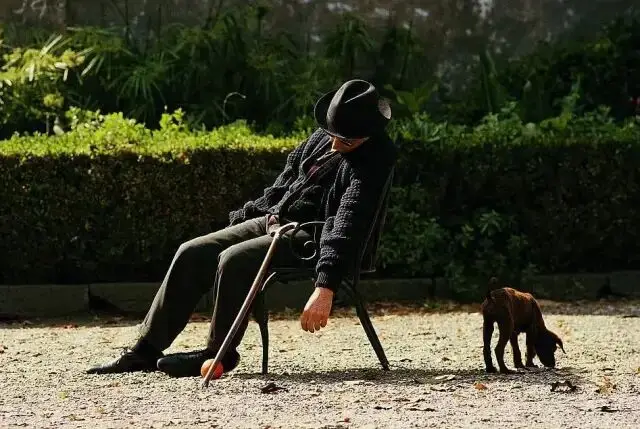
人类的欲望是一个无底洞，我们一直在追寻，却永难得到满足。
我们的心就像缺了一块东西，在能真正找到那块失落的东西之前，孤独是永恒的。
相似推荐
▼
已完成的混剪no 1
已完成的混剪no 2
已完成的混剪no 3
未完成的混剪no 1
未完成的混剪no 2
未完成的混剪no 3
未完成的混剪no 4
未完成的混剪no 5
这里没有挑逗你眼目情欲的小鲜肉
也没有挑动你肉体情欲的段子
更没有膨胀你今生骄傲的鸡血
我们只在乎那些最质朴真诚的作品
在那里我们才能恢复真正的想象力
我们也坚信这才是我们真正需要的

ID:Six_hundred_hits
长按二维码，一键关注
【六百击】
电影评论
尽情分享朋友圈

微信二维码打赏通道